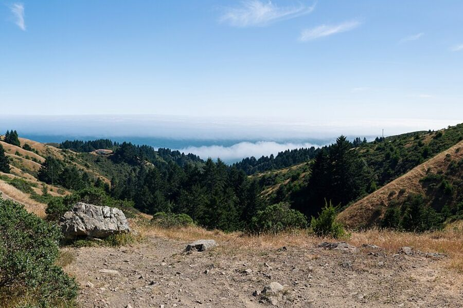
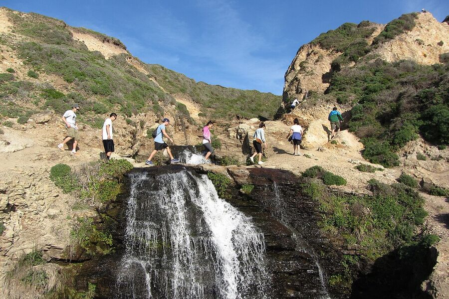
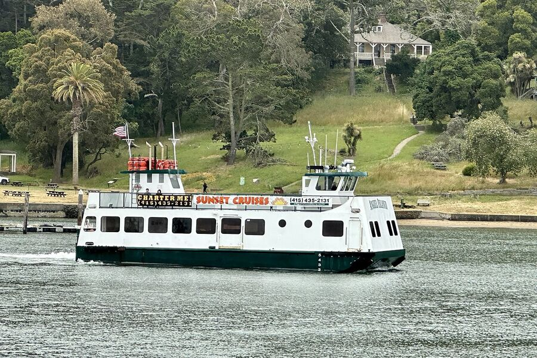

bois are still homeless
Thu, Oct 15 · 5:00 PM
Grand Canyon Village, AZ
RSVP on Partiful Add to calendar 2 going
You're invited
Mahjong, dinners, tastings, hikes, film nights, cabin trips, Homeless weekends and parties — hosted in San Francisco. Here is what's coming up, and everything that already happened.
Everything on the calendar, soonest first. RSVPs happen on Partiful.
Subscribe in your calendar One subscription — every event after this one turns up on its own. Download the file if webcal does not open.
Thu, Oct 15 · 5:00 PM
Grand Canyon Village, AZ
RSVP on Partiful Add to calendar 2 going
Picked, but not yet on the calendar. Some already have an invite up; the rest are waiting for a date.

Film night Wong Kar Wai "2046" (2004). A loose thematic sequel of "In the Mood for Love".

6.9 miles · 1,650 ft gain · loop from Pantoll Campground. Redwood canyon and a ladder on the Steep Ravine descent, ocean bluffs on the Dipsea, then Matt Davis back up through the coastal grassland. Half a day, moderate.
Pantoll Campground · Mt Tamalpais State Park

13 miles · 1,050 ft gain · out-and-back from the Palomarin Trailhead. Long but gentle, past Bass and Pelican Lakes to a waterfall that drops straight onto the beach. Time it with low tide and bring more water than you think.
Palomarin Trailhead · Point Reyes National Seashore
3.4 miles · 350 ft gain · out-and-back from the Lands End Lookout. Cypress groves, the Sutro Baths ruins, shipwreck views and the Golden Gate straight ahead. Easy, and the one to bring people on who say they don't hike.
Lands End Lookout · San Francisco

5.5 miles · 1,150 ft gain · loop from Ayala Cove, reached by ferry from Tiburon or the SF Ferry Building. Climbs to Mount Livermore for a full 360 of the bay — city, bridges and Marin all at once. Check the ferry timetable before the last descent.
Ayala Cove · Angel Island State Park
Every night that has been. Links still open the original invite.
25 events, republished from the live site whenever they change.
Most of these are small, and word of mouth is how they fill. Say hello and say which of the eight you'd come to — mahjong, a hike, a film, dinner, a tasting, a cabin, a Homeless weekend, a party — and you'll hear about the next one.
Message me on Instagram @danluzhu
Every event above belongs to one of these series. What follows is about the site itself — how it is built, and how to run your own.
Partiful sends x-frame-options: SAMEORIGIN, so its pages cannot be put in an iframe.
Instead, dandan reads the __NEXT_DATA__ JSON that every Partiful event page ships and
caches the title, date, cover image, location and RSVP count in SQLite — then renders its own
cards and links out to the real RSVP page.
A background loop refreshes every event that is still ahead of us, hourly, so a date moved on Partiful shows up here without anyone pressing a button. This page republishes itself on the same principle: nightly, and only when something actually changed.
Scheduled events sit at the top, soonest first. Six hours after an event starts it moves itself into the archive, grouped by year — the same lists you scrolled through above.
People leave a name, an Instagram handle and the series they'd come to. The list is private, searchable and sortable, and mirrors to a spreadsheet you can open in Excel.
Contacts live in a local SQLite file that is never committed. /list and
/admin sit behind one password; the public form has a honeypot and a rate limit.
BunThe HTTP server, the test-free small-project runtime, and bun:sqlite.SQLiteOne file holding events and contacts. WAL mode, no ORM.No frameworkServer-rendered HTML from template literals, one stylesheet, one small script.PartifulStill where the RSVPs happen — this is the front door, not a replacement.# set ADMIN_PASSWORD and SESSION_SECRET cp .env.example .env bun run start # http://localhost:4321 bun run add https://partiful.com/e/xxxxxxxx bun run sync # refresh the cache by hand